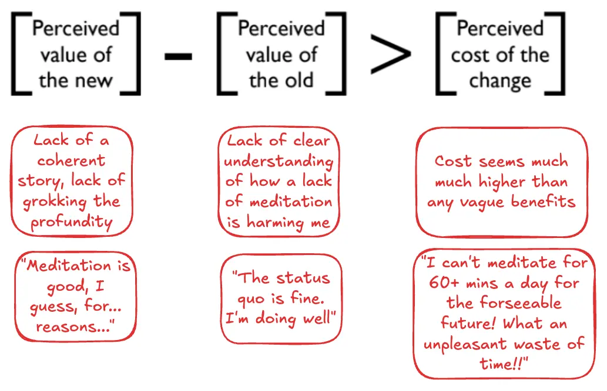
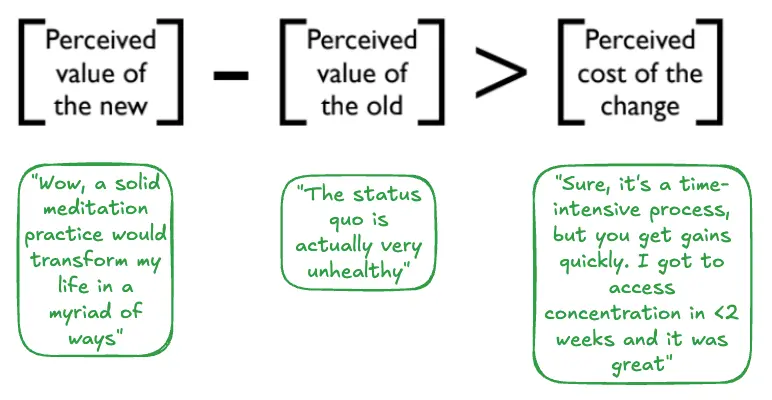
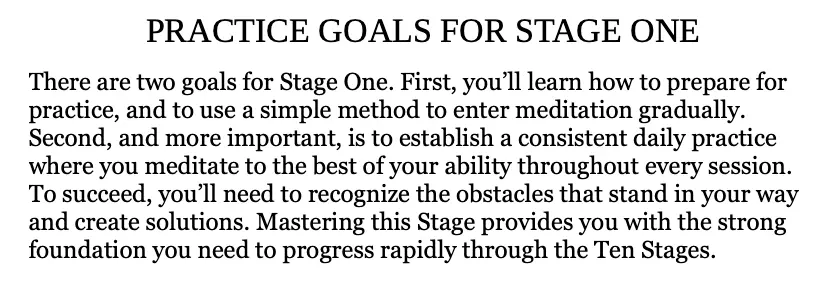
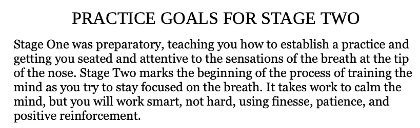
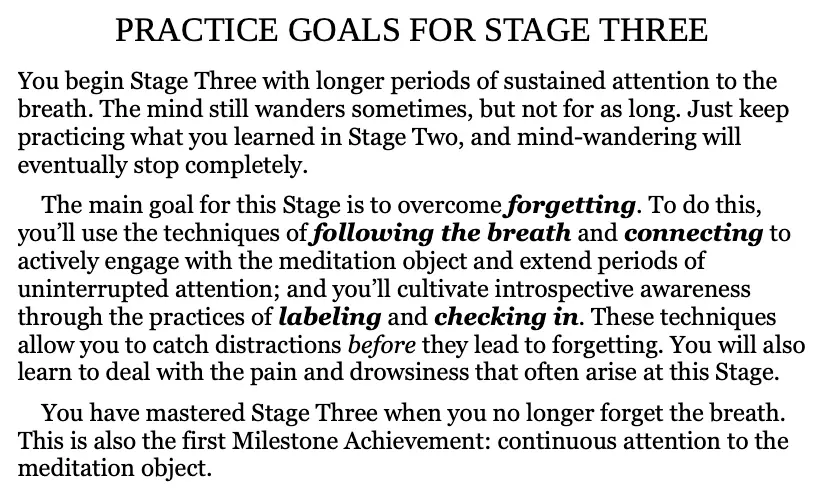
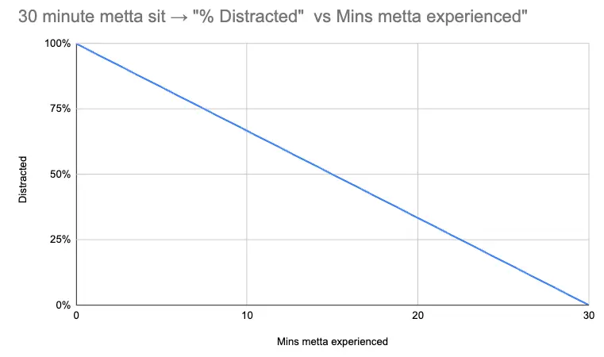
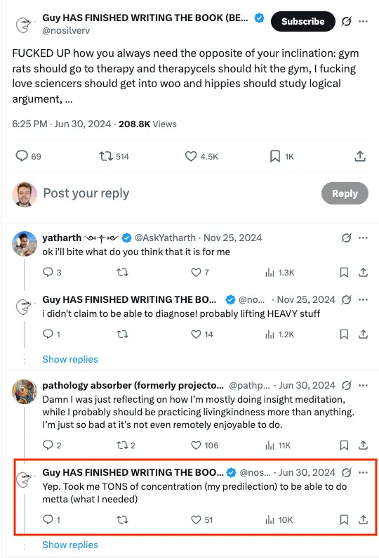

- 2025-07-20
- Outcome of writing this → I’ve convinced myself to give it a proper go!
1. My meditation journey so far
2. And yet, I’m not a meditator - what’s up with that?
I’ve had some attainments
- I’ve had hints at attainments from sitting
- Access concentration from 45 Days to Awakening
- Insight into the nastiness of my own mind, downstream of better mindfulness
- Post-vipassana retreat → judging the other men on the retreat who I thought were immoral/arrogant etc
- During Jhourney retreat → judging people on the streets of Toronto
- I’ve had attainments from non-sitting
- Talked into stream entry
It’s aversive as hell + I haven’t had a coherent story
- I’ve never believed a story about meditation, I’ve never really grokked how useful it can be
- It feels so daunting, and impossible, and time-consuming, and like the benefits are hidden behind thousands of hours of mundanity, so I get daunted and don’t try
Gilman equation
- The perceived value of the new needs to be high
- (This is what the green arrow signifies → you want to boost the perceived value)
- The perceived value of the old needs to be trumped by the perceived value of the old
- (This this what the red arrow signifies → you want to lower the perceived value)
- The gained value needs to trump the cost of change

Perceived value of the new
- I haven’t had a clear personal narrative re: the value of meditation
- I’ve had other people’s narratives (e.g., “Ingram is enlightened, and he… likes it”), but I haven’t made my own coherent narrative
Perceived value of the old
- The “status quo”, the normal way of living, without meditation
- Need to disfavourably compare this to a life of meditation
Perceived cost of the change
- This is a key thing for me → as someone who is overly neurotic about wasted time, the perceived cost of meditating loads has been very high. “I can’t carve out an hour a day!” etc.
So, my Gilman equation for meditation is something like this:

- So:
- My “perceived value of the new” has been essentially 0, as I haven’t grokked the profundity of regular meditation, I don’t believe it
- My “perceived value of the old” is essentially 100 → “this is totally fine and normal”
- My “perceived cost of the change” is also essentially 100 → “it’d be a huge time commitment, unsure if I’d even make progress”
- (0 - 100) > 100
- -100 > 100 = FALSE
- There’s a hugeeee gulf
Vs, the shape I could get my Gilman equation into
- vs

- Perceived value of the new = 100
- “Holy shit, meditation would be so deeply transformational”
- Perceived value of the old = -100
- “wow, the status quo is actually super toxic. I’m deeply judgemental, my mind is super scattered, my morality is poor”
- Perceived cost of change = 20
- “Sure, big time commitment, but relatively immediate gains”
- (100 - -100) > 20
- 200 > 20 = TRUE → huge improvement
- Perceived value of the new = 100
3. Mapping the Gilman equation
3A - “Perceived value of the new”
- Value of meditating. Where could it get me? Different time scales?
- Why meditate?
Well, what are we talking about here?
- There are a variety of techniques and approaches
- I can imagine something like this:
Path 1 → concentration and metta
- Improve shamatha via nostril meditation (2-4 weeks)
- Use improved concentration to do metta meditation, TWIM stuff (forgiveness (self and other), lovingkindness)
- Return to the Jhourney instructions (that is, do jhana practice)
Benefits of improved shamatha
- Improved shamatha is the essential prerequisite to everything else
- E.g., “want to have a good sit where you generate a good amount of metta? Well, if you’re still in ‘monkey mind’/‘mind as a waterfall’ mode, then you’ll spend 95% of the sit distracted, and therefore generate barely any metta”
- Want to investigate craving and aversion (Michael Stroe-style?) - well then, you’re gonna need access concentration
- See how my mind works
- More motivation to change how my mind works
- When you exist in ignorance (moha, one of the 3 defilements), you’re blind to how bad things are, so you don’t have any motivation to change them
- Ignoti nulla cupido
- Intellectus sibi permissus
- Socratic “double ignorance”, which Socrates believed was the worst thing of all
- When you exist in ignorance (moha, one of the 3 defilements), you’re blind to how bad things are, so you don’t have any motivation to change them
- The Mind Illuminated, stage 1

- The Mind Illuminated, stage 2

- The Mind Illuminated, stage 3

Benefits of metta
- This one is pretty obvious actually. The thing is, I’ve never had a metta practice from a place of also having decent shamatha, so I’ve only made a little tiny bit of metta, then been distracted as all hell
- But yeah, lovingkindness, compassion, both for yourself and others, so clearly just a profound state to rest in daily
- Especially if you’re someone as habitually judgemental as me
3B - Perceived value of the old
- Value of the status quo. How I currently live, without meditation
How is a lack of meditation costing me?
Ignorance
- Empirically, I know that when I meditate a lot (e.g., vipassana retreat, Jhourney retreat), I notice how nasty my mind is
- Therefore, it seems true that my mind is habitually nasty → judgemental, at the very least
- And to not meditate is to allow this to be the case, unconsciously
Blocker to profound states
- My lack of access concentration means that
- if I try to e.g. generate metta, I’ll be distracted as hell
- if I go to the local Buddhist centre - I’m distracted as hell
- if I do open awareness practice - I’m distracted as hell
3C - Perceived cost of the change
- How costly would it be to meditate?
- Well, when I did the “45 Days” course, I reached nostril “access concentration” in <2 weeks
- So, say I was doing 2 hours of sitting a day (which I don’t think I was) → that’s ~28 hours to get to a noticeably improved state of concentration, to be conservative
- That is very different from the default story of “oh god, it’d take 1000s of hours of meditation in order to get enlightened”
Outcome
- Lemme follow “The Mind Illuminated” for a few weeks and improve my shamatha
- Ooh, I could keep a meditation log on this website! Hype
p(Success)?
- If I follow The Mind Illuminated
- High probability that I’ll improve my concentration
- I’ve improved it before → 45 Days course, vipassana retreat, Jhourney retreat
- I see the benefit of this
- Better concentration allows more “juice” from subsequent practices → e.g., instead of trying to do metta but being 99% distracted → if I’m only say, 30% distracted, that’s a profound increase
- 30 minute metta sit where I’m 99% distracted = 18 seconds of metta experienced
- 30 minutes of metta where I’m 80% distracted = 6 minutes of metta experienced
- 30 minute metta sit where I’m 30% distracted = 21 minutes of metta experienced
- High probability that I’ll improve my concentration

Final insight
The two unexamined beliefs that have blocked me from meditating regularly
- I’ve been operating on two beliefs that are clearly silly and incompatible when viewed clearly:
1. Meditation feels non-profound because
- “Meditation feels non-profound because whenever I try it, I don’t really get anywhere”
- E.g., a metta sit doesn’t make me feel good. I’m distracted, and I end up feeling like it was a waste of time
2. Doing concentration practice feels non-profound because
- “Concentration practice is boring, and non-profound”
- “Concentration isn’t where the juice is → it’s non-profound, it’s not vipassana, it’s not metta → focusing on the breath, pure shamatha, won’t get you to enlightenment or etc”
Reframe
Concentration practice is an essential prerequisite
- Without good concentration, you’re totally blocked from experiencing the benefits of other techniques
- You can’t just rush to e.g. metta, because if you’re 99% distracted, you won’t get anywhere
- Shamatha is the essential prerequisite. It is 100% worthwhile. Imagine doing a metta sit at 30% distraction, vs 99% distraction. Profound difference
Similar to cardio
- Poor cardio blocks e.g. enjoying running, swimming, squats → get exhausted really quickly
- Good cardio = suffer less
- Good shamatha = more benefits
- 2025-07-22
- Spotted in the wild:

- ☝️ tweet link